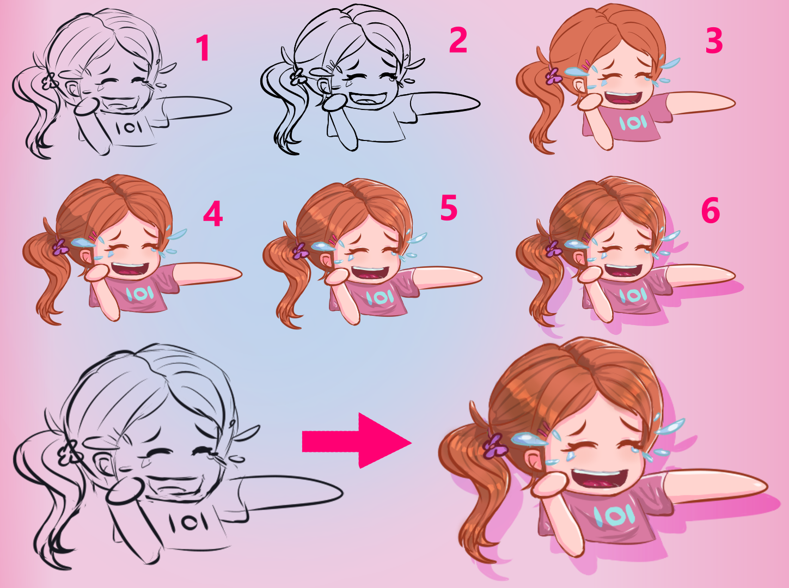

Рисование эмодзи и стикеров
Наверняка у каждого человека в наше время найдётся любимый герой, а эмодзи давно стали частью нашей жизни.
Возможно, вам захочется попробовать создать оригинальный эмодзи с вашим любимым героем.
Сегодня я расскажу вам о том, из каких этапов состоит создание таких рисунков.

- Идея. Перед тем, как начинать рисовать, нам нужно определиться какую эмоцию и какой смысл мы хотим передать
- Референсы. Когда мы определились с задумкой, нам нужно узнать как она может выглядеть и
что делает именно эту эмоцию узнаваемой
- Набросок. Иногда нужно сделать много попыток прежде чем результат нас устроит.
Суть в том, чтобы задать основную форму, с которой мы начнём работать
- Лайн. После того, как набросок будет готов, мы нужно аккуратно обвести
его(обычно это делается на другом слое в большинстве графических редакторов.
После этого слой с наброском скрывается или удаляется).
Лайн может быть как чёрным, так и цветным.
Цветным он делается при помощи инструмента лассо и фильтра цвета, уже после того, как мы положили базовые цвета
- Базовые цвета. После того, как мы закончили работу над лайном, мы можем залить каждую область одним цветом.
Обычно это так же делается на одном или нескольких новых слоях.
На этом этапе мы стараемся добиться гармоничного сочетания
- Тени. Представьте, что источник света находится с какой-то стороны от персонажа
и нам нужно мысленно разделить персонажа на части чтобы лучше понимать как именно на какую часть падает свет.
Тени так же добавляем на отдельный слой
- Блики. Блики, пусть и кажутся незначительной деталью, делают наше изображение более живым и детализированным.
- Дополнительные детали. После того, как мы вроде бы закончили наше изображение, возможно нам захочется добавить узор
или сделать интересный градиент.
Это можно сделать сейчас, когда основная работа уже сделана.
Нужно всего лишь добавить новый слой и расположить его после слоя с базовым цветом
(для того чтобы все детали были видны).
После этого можно сказать, что рисунок уже готов, но пока он еще не стал эмодзи или стикером
- Масштабирование. Для размещения изображения в качестве эмодзи или стикера, нам могут понадобиться разные размеры.
Например для Discord максимальное разрешение для эмодзи 128х128 пикселей,
но в чатах из-за особенностей приложения,
мы будем видеть его в размере 32х32. В то же время для Telegram максимальное разрешение 100х100 пикселей.
Для стикеров у каждой платформы так же есть свои стандарты.
Из-за этой разницы, дальше мы будем работать с копией файла чтобы не потерять оригинальный
размер изображения и его качества.
Так можем уменьшить изображение или его часть настолько, насколько это необходимо для нас
и не волноваться о том, что после этого оригинал не расшакалить.
- Финальные правки маленького изображения, где некоторые линии могут быть не слишком заметны.
- Ваш эмодзи готов
Для примера, вы можете посмотреть как загрузить ваши эмодзи на сервер в Discord.
На каждой платформе свой порядок и правила загрузки эмодзи и стикеров.